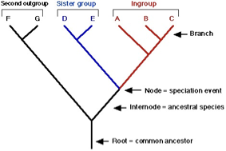

Module 9.1: Nonbibliographic Structures for Organizing Knowledge
LIS 5043: Organization of Information
Dr. Manika Lamba
Introduction
Envisioning Exercise #1
Describe how YOU organize information
In home spaces
In work spaces
In digital spaces
Envisioning Exercise #1
What devices (all types) do you use to organize your information?
How do/can you share info between these spaces?
Are your systems efficient? Effective?
Do they enable findability?
Do they help you get work (in any of the contexts) done?
It Used to Be ….
We “knew” who our users were and how they looked for information
We knew what a “collection” was and its boundaries
We knew, well sort of, what constituted data, information, knowledge, wisdom

Focus Points
How do people, professions and organizations naturally organize information?
How does this fit into the LIS/IS view of structuring information and knowledge?
What can be learned about structuring meaning by examining the use of personal, social sharing, cataloging, and networking systems?
What do information seeking activities reveal about structures for organizing information and knowledge?
Structures, Structures Everywhere
Definition:
“a fundamental and sometimes intangible notion covering the recognition, observation, nature, and stability of patterns and relationships of entities. From a child’s verbal description of a snowflake, to the detailed scientific analysis of the properties of magnetic fields, the concept of structure is an essential foundation of nearly every mode of inquiry and discovery in science, philosophy, and art.” (Pullen, 2000)
Structures
Does the Pullen definition work completely?
Does it include the:
Life experiences
Understandings
Applications of the organizer or person creating either the structure or the values within the structure?
What do YOU think is missing from the definition? How do you define structure(s)?
Choose appropriate controlled or other vocabulary to use (natural language, free text)
Choose appropriate level of indexing
exhaustivity
specificity
number of subject terms to include
IR System Design
“Why are online catalogs still hard to use?” (Borgman 1996)
System design models
Query design
Online card catalog model
Representations have to fit into “cookie cutter” systems that were developed many years ago and do not necessarily benefit from what we now know about users and their information seeking processes
What are Second Generation catalogs incorporating? How are they more user-centered? Social?